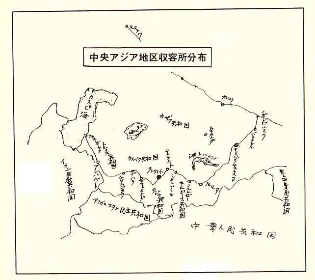

|
第十一 古都タシケント市
タシケント地区の各職場に稼働しているう
ちに、ソ連人との簡単な会話も、少しづつ会
得するようになると、今度はタシケントの知
られざる世界に、興味を覚えるようになった。
ソビエト連邦には、十五の共和国（ＣＣＣ
Ｐ）がある。ウズベク共和国は、中央アジア
の自治共和国では、最も近代的工業の発展し
た一国だった。
ソ連警備兵や市民の話を総合すると、共和
国の人口は約一千万人とも云う。中央アジア
には、ウズベクの外にカザフ、キルギル、ト
ルクメン、タジク共和国等諸民族合せて約千
七百万人とも言うので、その六割がウズベク
共和国に集まって住んでいることになる。
首都タシケント市には、ウズベク人を始め、
スラブ系ロシア人その他の共和国民族が入り
混んで、約八十万人が居住していると云われ
る。
人口八十万人と云うと、満州の新京首都地
帯と、略々同じ人口だから、市の概要は想像
がつくのであった。
タシケントは、西欧からも遠く離れて、西
欧ソ連の背後地にあって、軍事的にも重要な
位置を占めている。
独ソ戦では、安全地帯として軍事的役割は
大きく、軍需工場が多数あった。終戦と同時
にこれら工場は殆んど平和産業に切り換えら
れて、市街地も整備された。
ウズベク警備兵は、何時もタシケントを自
慢話の一つとして、その近代化を誇っていた。
五階建の官庁街のビルを見ると、こんな高い
建物は日本にあるか、とよく聞くのだった。
彼等は日本国が、如何なる歴史と文化を有し
ているか、東洋では何処に位置しているかな
ど、全く無知であった。彼等に知られている
日本は、昔から好戦国で、ゲルマンスキーと
共同して今次大戦を起した。
昔、日露の戦役では、日本軍はソ連人民を
残虐に扱い迫害した。その報復を、今回の満
州遠征でやれと吹き込まれたのではないかと
思われる位に、日露戦争の罪悪史を申し立て
たりした。
日本国に対する代表的知識は、どのソ連兵
も、どの労働者も異口同音に、
「ヤボンスキーさむらい（侍）みかど（帝）
はらきり（腹切り）」と声をかけた。
これが彼等に教えられた日本観の凡てであ
った。そうしてソ連は世界一の偉大な国で、
日本国は後進国で野蛮国だと教育されていた
ようだった。
彼等は電車、トレーラーバス、乗用自動車
などを指差して、これはあるか、あれはある
かと、子供の様に訊ねるのだった。最後に訊
ねるものがなくなると、昼の月を仰いで、あ
んなお月さんはあるかと訊ねるのには、全く驚
きであった。
「月は日本には三つあるよ」
「ほんとにか、三つもあるのか、ほんとか」
と信じられぬと言う怪訝な瀕付で、念を押
すので、
「昼の月、夜の月、満月の名月」
があると答えると、警備兵同志で協議の上、
月は宇宙には一つだけと確認し合うのを見る
と、何とも滑稽でもあり、稚気愛すべしと、
苦笑せざるを得なかった。
タシケントの市街は、杜の都とも言えた。
樹令の老いた大木が、各都大路に並びビル街
を高く覆っていた。街の主要大街は、きまっ
て、レーニン大街、スターリン通りなどと、
名称がつけられていた。
主要路は、石だたみの道路が多く、幅員も
広く、中央を電車か、トレーラーバスが走り、
その両側は自動車の上り下りの二車線になり、
その両側は花壇が設けられて、更に両側は歩
道となっていた。
花壇には四季折り々の花を咲かせて街行く
人人の目を楽しませた。盛夏となると、花壇
の中に設けられた噴水が、空高く噴き上り、
ビル街の巨樹の並木道との調和がとれて、近
代的美観を呈していた。
土地は凡て国有地だから、都市計画は当初
から、思いのまま計画線を引けば良いのであ
る。
この地は年間の降雨量は極少で、晴天続き
が多く、二月が雨期となり時折り小雨が降る
程度だった。大陸高気圧が、一年中居座った
まま動かなかった。
従ってタシケントの映画館は、晴天続きの
天候のため、露天に施設されていて、スクリ
ーンを中心に、扇形に広がって椅子が並べら
れていた。そこはまた市民の憩いの場として、
広く自由に利用されていた。
タシケント市街背後地は、軍需工場地帯と
平和産業工場地帯に分れて区割され、今次大
戦中は後方兵站の重要工場地帯となっていた
ことは、前述のとおりである。
市内は綿花工場、繊維工場、大型農機具工
場が、広大な敷地に棟を並べてコンビナート
を造っていた。
工場名は凡て番号で呼称されて、約一五千
位の工場が存在していると云われていた。
各工場は、五ケ年計画生産目標数が、割り
当てられていた。
従って各工場正門出入口には、年間及び各
月別割当生産目標数と、その実績の数字が、
大きな掲示板に、各項目別に白ペンキで克明
に記載され、その工場が指示割当数量を生産
しているかどうか、一目で分るようになって
いた。
この掲示成績如何によって、当然に工場長
以下各幹部の指導運営成績が問われることに
なる。
従って工場長や各幹部責任者は、部下の作
業成績向上に躍起となることは当然であり、
また部下労働者に対する監督激励はきびしく、
容赦はなかった。
ノルマの低調な労働者に対する制裁措置は、
賃金カット等冷酷無情で臨んだのである。作
業ノルマこそ、この国の凡てを支配する絶対
的権威であり、掟であった。これに伴い、他
人に対する情けや、容赦などの介入する余地
は全くなかった。
この怖る可きノルマこそ、マルクス・レー
ニン主義の唯物論的弁証法とか云う哲学が生
んだ国是であり、社会主義の鉄則であると、
思われるのであった。
工場正門に掲げられているノルマ実績が、
不振で不調と認められると、工場長や担当部
課長は責任を追求されて、その地位から去ら
なけばならない。
ノルマによって、凡て新陳代謝が行われる
ことになり、同時に指導者交替となる。この
原則は共産主義社会の動かせない原則である
と思われる。
私が働いていた第一〇七工場では、工場長
は、毎日工場差し回しのポロ自動車で、通勤
して巾を利かしていた。
ところが何かの原因で、毎月工場生産ノル
マの低調が続いて、数ケ月後には、工場長は
更迭し左遷されて、一介の労働者にまで降格
されてしまった。
彼は一般労働者に混り、一般労働者がする
ように、一日の労働を終え帰途につくときは、
工場廃品の板屑を自宅の炊事用の薪にするた
め、両脇に抱えこんで、しよぼしょぼと家路
を辿るのであった。
この有様を目のあたりにした私は、共産主
義社会の裏面史が浮彫りにされた思いで、感
に堪えなかった。
タシケント地区には、今次大戦に敗れた日
本、ドイツ、イタリアの俘虜収容所が、何十
ケ所も散在していると謂われた。その俘虜の
数は、約三万人を超えるだろうと、朝鮮人通
訳が話していた。
タシケント地区俘虜収容所の司令官は、少
尉の肩章をつけた政治部将校だった。副官は
大佐の肩章だった。
或る日、我らの第五ラーゲルに突然彼等、
が、巡察に回って来た。この大佐と少尉の奇
妙なコンビの巡察官の来訪に、私は偶然に居
合わせた。
少尉の司令官は副官大佐を従えて、ジープ
から降り立つと、我らの寝室にツカツカと這
入って来た。
司令官は、寝台や窓枠に溜まっている塵を
手で撫で、マルチンスキー所長と、副官大佐
に手厳しい口調で、
「室内の清掃（チースト）は不充分だ。不
潔だ（グリヤーズナ）。もっと清掃をして、
清潔にしておけ・・・・」
と何回も叱責している様子だった。所長の
マルチンスキー中尉と副官大佐の二人は、只
管に恭順の態度を示し、
「司令官殿、よく分りました。そのように
いたします。何分にも俘虜共は、寝ることと、
喰うことばかり考えて、清掃など幾ら喧しく
言うても一向に命令どおりやりません。これ
から、もっと厳重に励行させます。聞かない
ときは制裁措置を取りましょう。・・・・」
とでも言っているのか、司令官のご機嫌を
とっているように見受けられた。
司令官は、
「糧抹の保管、管理状況はどうなっている
か、規定配給分量は喰わしているだろうね、
栄養状況はどうだろう。餓死する者はいない
だろうな－糧秣はどこに保管しているか」
等尋問しているようだった。私ほこの時、
「規定量どおりは喰っていないぞ、亀肉で
誤摩化して、奴等は私腹を肥やしているぞ、
この所長中尉を早く処罰しろ・・・。」
と呼びたかった。しかしそれもできず独り言
に止めたのだった。
二人の従者は、始終落ち着きを失い、平身
低頭して、勤勉振りを示すのに精一杯だった。
少尉司令官は、ユダヤ人独特の冷厳無情の
表情であったが、頭の切れは凄いようだった。
厳しい口調で何かを指示して、副官大佐を従
えて軍用ジープに乗って去って行った。
朝鮮通訳の話によれば、この司令官は、独
ソ戦中は政治部参謀で、経済方面を担当して
いた実務家の切れ者と云うことだった。
少尉でも職務では、大佐を指揮する権能を
持つのが、職階級制度だと付け加えた。
文化方面では、タシケント市は、近効のチ
ムケント、サマルカンド、ブハラ、フルンゼ、
アルマアタ等と共に、何れも古代文化の歴史
を有している古都である。シルク・ロードの
西の要路にも当り、紀元前から文化発祥の地
として栄えた。
これらの地方は、何れも回教文化の栄えた
古都であり、ウズベク共和国はマホメットの
生誕の地でもあり、イスラム教のメッカとも
称された。
ウズベク人種は、赤褐色の頭髪で、瞳は東
洋人と同じく黒く、黄色人種系で、骨格は太
く親しみ易い種族だった。
若い女性は顔をバレンジア（羊毛と絹で織
った黒色の覆い頭巾）で隠し、男はチルペチ
（丸い帽子）を被っていた。話す日用語はロ
シア語で統一されていたが、同族間ではウズ
ベク語も使われていた。
一般社会で指導的地位に立つ者は、殆んど
青い瞳のスラブ族で占められて、瞳の黒い黄
色人種は、労働者階級が多かった。
黒い瞳より青い瞳の方が、社会的地位は優
位だった。

|